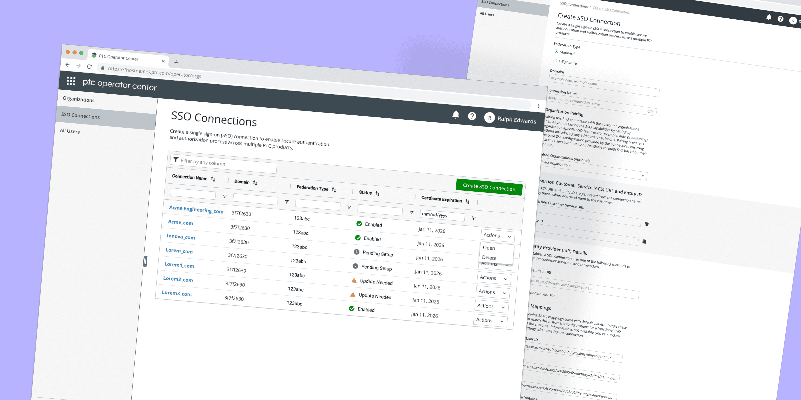
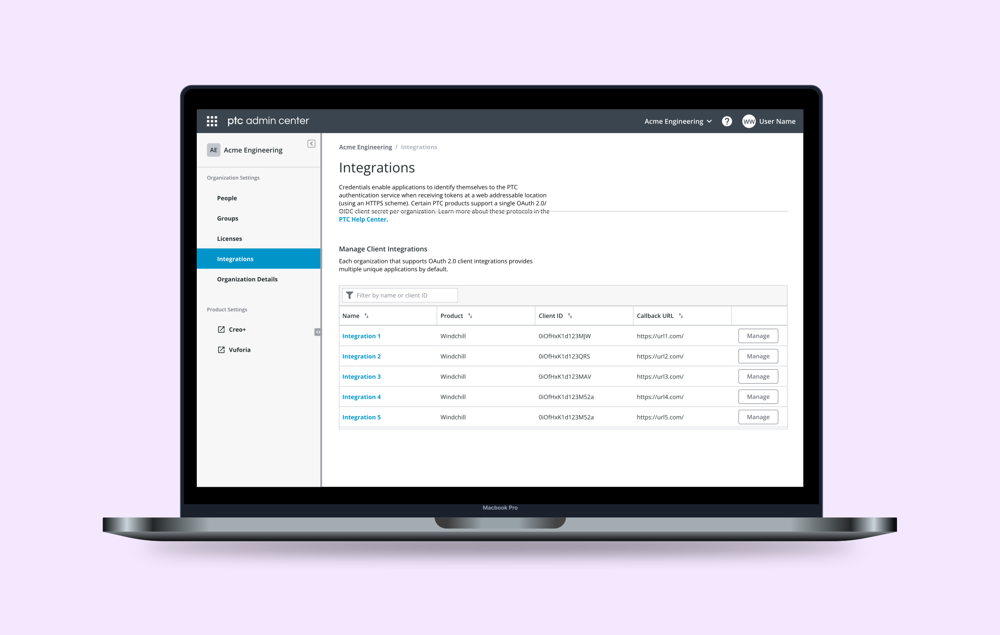
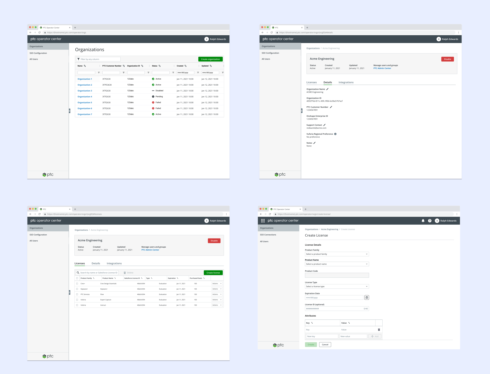

Product designer · New YorkMaking complex
Making complex
software easier
to operate.
I design the systems behind enterprise software: identity, access, administration, and workflows that have to make sense at scale.
View selected work ↓5 yearsDesigning enterprise products
15,000+Administrators supported
IAM + SaaSIdentity, access, and operations
Four connected stories from PTC’s enterprise SaaS platform.
01 / Identity & access
Single Sign-on Connection Manager
Turning fragmented identity setup into one understandable operational workflow.
Read case study ↗
02 / Platform governance
Scaling role-based access control
Expanding access without expanding risk across support and operations teams.
Read case study ↗03 / Integrations
OAuth 2.0 Client Integration Manager
Making secure third-party application setup legible to customer administrators.
Read case study ↗
04 / Administration
PTC Operator Center
One operating surface for the organizations, users, and licenses behind PTC SaaS.
Read case study ↗
Point of viewClarity without
Clarity without
oversimplification.
Good enterprise design gives people enough context to make confident decisions without forcing them to understand the machinery underneath.